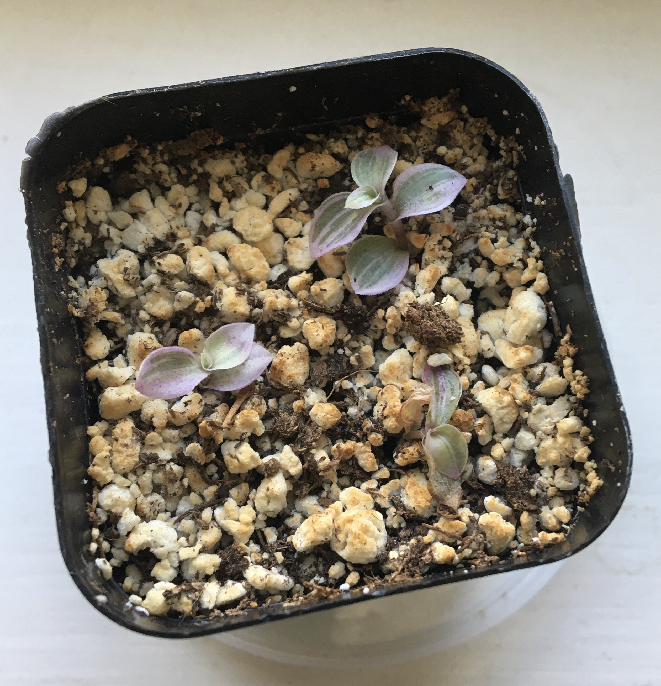
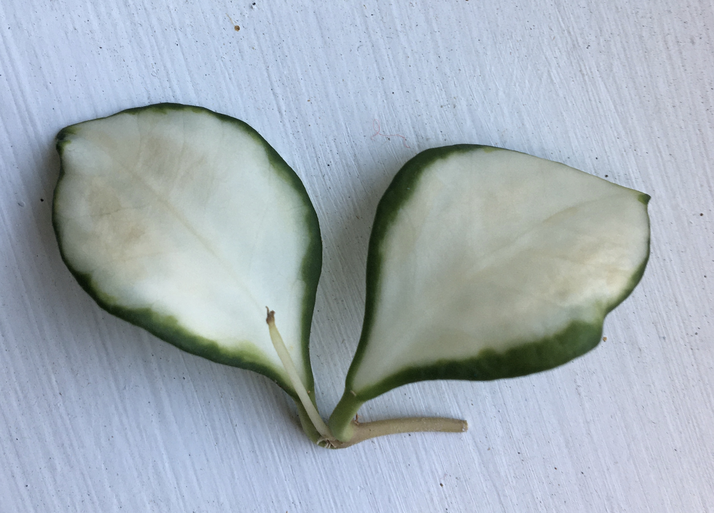

Haworthias
Succulents that can grow in medium light, unlike most that need lots of bright light.
Their translucent windows let the light in, allowing them to live in lower light than most other succulents. Also makes you want to take a bite.
This one had babies:
I'm still figuring out how to water them so they stop JETTISONING THEIR ROOTS OFF, but they're hardy plants and that will give me time to figure it out.
Rude.
Purple Passion Plant
A green plant with purple fuzzies! They like to stay moist, and will droop their leaves when they need more water. Very good if you're forgetful!
They're vining plants, so they grow up about a foot/foot and a half, then flop over.
These plants started out about the same size, then I repotted the left one in a bigger pot, and it grew very fast. I took a few cuttings from the top to hopefully help it stop lengthening so quickly and focus on growing a little bushier. I'm planning to combine them into one pot soon.
Pilea Glauca
Very cute tiny leaves, it's growing some long trailing limbs. My least problematic plant.
Hoya Krohniana "Black Leaves"
I've wanted a black houseplant for a while now, so I was very happy to get this little cutting. It's supposed to darken in higer light, but can tolerate lower light.

It's not pure black, but a mix of black and green. The teeny new leaf started out lime green, but has darkened a lot in the sun.
Marble Queen Pothos
I got this one as a cutting at a library plant swap.
I heard pothos are supposed to be easy to propagate, but this one really tested my patience. It took at least 2 weeks for it to even start thinking about putting out roots after I put it in water.

The Quarantine Zone
Where new plants go for a few weeks to make sure I'm not introducing pests to my collection.
I've been trying to stick to cuttings for new purchases, since they're both easier to check over for pests, and easier on my wallet.
Callisia Repens Pink Lady
Pink, white, green, and tiny.
A bit of this fell off a plant at a nursery and they said I could keep it. I separated it into 3 teeny plants, and stuck them in soil with lots of perlite.

Who will live and who will die is never certain, but it's probably going to be the one on the bottom right.
Hoya Heuschkeiliana Variegated
Extremely pretty, leaves are about the size of my Hoya Krohniana. New growth starts out pink and then fades into the normal white/green.

It got ROOT ROT and discolored when I tried to transfer it from sphagnum moss to coco husk. >:( Now I have to re-root it in a different medium and hope this doesn't happen again.